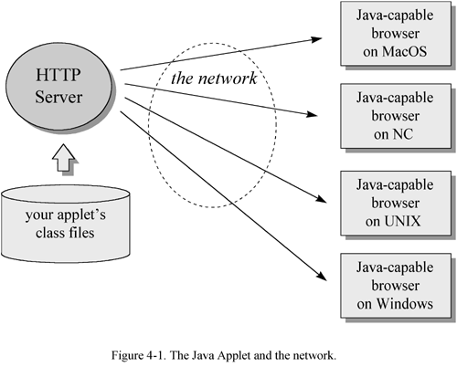

Any use of this Beta Book is subject to the rules stated in the Terms of Use.
| © 1997 The McGraw-Hill Companies, Inc. All rights reserved. Any use of this Beta Book is subject to the rules stated in the Terms of Use. | |
The previous two chapters discussed how Javaís architecture deals with the two major challenges presented to software developers by a networked computing environment. Platform independence deals with the challenge that many different kinds of computers and devices are usually connected to the same network. The sandbox security model deals with the challenge that networks represent a convenient way to transmit viruses and other forms of malicious code. This chapter describes not how Javaís architecture deals with a challenge, but how it seizes an opportunity made possible by the network.
One of the fundamental reasons Java is a useful tool for networked software environments is that Javaís architecture enables the network mobility of software. In fact, it was primarily this aspect of Java technology that was considered by many in the software industry to represent a paradigm shift. This chapter examines the nature of this new paradigm of network-mobile software, and how Javaís architecture makes it possible.
Why Network Mobility?
Prior to the advent of the personal computer, the dominant computing model was the large mainframe computer serving multiple users. By time-sharing, a mainframe computer divided its attention among several users, who logged onto the mainframe at dumb terminals. Software applications were stored on disks attached to the mainframe computer, allowing multiple users to share the same applications while they shared the same CPU. A drawback of this model was that if one user ran a CPU-intensive job, all other users would experience degraded performance.
The appearance of the microprocessor led to the proliferation of the personal computer. This change in the hardware status quo changed the software paradigm as well. Rather than sharing software applications stored at a mainframe computer, individual users had individual copies of software applications stored at each personal computer. Because each user ran software on a dedicated CPU, this new model of computing addressed the difficulties of dividing CPU-time among many users attempting to share one mainframe CPU.
Initially, personal computers operated as unconnected islands of computing. The dominant software model was of isolated executables running on isolated personal computers. But soon, personal computers began to be connected to networks. Because a personal computer gave its user undivided attention, it addressed the CPU-time sharing difficulties of mainframes. But unless personal computers were connected to a network, they couldnít replicate the mainframeís ability to let multiple users view and manipulate a central repository of data.
As personal computers connected to networks became the norm, another software model began to increase in importance: client/server. The client/server model divided work between two processes running on two different computers: a client process ran on the end-userís personal computer, and a server process ran on some other computer hooked to the same network. The client and server processes communicated with one another by sending data back and forth across the network. The server process often simply accepted data query commands from clients across the network, retrieved the requested data from a central database, and sent the retrieved data back across the network to the client. Upon receiving the data, the client processed, displayed, and allowed the user to manipulate the data. This model allowed users of personal computers to view and manipulate data stored at a central repository, while not forcing them to share a central CPU for all of the processing of that data. Users did share the CPU running the server process, but to the extent that data processing was performed by the clients, the burden on the central CPU hosting the server process was lessened.
The client/server architecture was soon extended to include more than two processes. The original client/server model began to be called 2-tier client/server, to indicate two processes: one client and one server. More elaborate architectures were called 3-tier, to indicate three processes, 4-tier, to indicate four processes, or N-tier, to indicate people were getting tired of counting processes. Eventually, as more processes became involved, the distinction between client and server blurred, and people just started using the term distributed processing to encompass all of these schemes.
The distributed processing model leveraged the network and the proliferation of processors by dividing processing work loads among many processors while allowing those processors to share data. Although this model had many advantages over the mainframe model, there was one notable disadvantage: distributed processing systems were more difficult to administer than mainframe systems. On mainframe systems, software applications were stored on a disk attached to the mainframe. Even though an application could serve many users, it only needed to be installed and maintained in one place. When an application was upgraded, all users got the new version the next time they logged on and started the application. By contrast, the software executables for different components of a distributed processing system were usually stored on many different disks. In a client/server architecture, for example, each computer that hosted a client process usually had its own copy of the client software stored on its local disk. As a result, a system administrator had to install and maintain the various components of a distributed software system in many different places. When a software component was upgraded, the system administrator had to physically upgrade each copy of the component on each computer that hosted it. As a result, system administration was more difficult for the distributed processing model than for the mainframe model.
The arrival of Java, with an architecture that enabled the network-mobility of software, heralded yet another model for computing. Building on the prevailing distributed processing model, the new model added the automatic delivery of software across networks to computers that ran the software. This addressed the difficulties involved in system administration of distributed processing systems. For example, in a client/server system, client software could be stored at one central computer attached to the network. Whenever an end-user needed to use the client software, the binary executable would be sent from the central computer across the network to the end-userís computer, where the software would run.
So network-mobility of software represented another step in the evolution of the computing model. In particular, it addressed the difficulty of administering a distributed processing system. It simplified the job of distributing any software that was to be used on more than one CPU. It allowed data to be delivered together with the software that knows how to manipulate or display the data. Because code was sent along with data, end-users would always have the most up-to-date version of the code. Thus, because of network-mobility, software can be administered from a central computer, reminiscent of the mainframe model, but processing can still be distributed among many CPUs.
A New Software Paradigm
The shift away from the mainframe model towards the distributed processing model was a consequence of the personal computer revolution, which was made possible by the rapidly increasing capabilities and decreasing costs of processors. Similarly, lurking underneath the latest software paradigm shift towards distributed processing with network-mobile code is another hardware trend--the increasing capabilities and decreasing costs of network bandwidth. As bandwidth, the amount of information that can be carried by a network, increases, it becomes practical to send new kinds of information across a network; and with each new kind of information a network carries, the network takes on a new character. Thus, as bandwidth grows, simple text sent across a network can become enhanced with graphics, and the network begins to take on an appearance reminiscent of newspapers or magazines. Once bandwidth expands enough to support live streams of audio data, the network begins to act like a radio, a CD-player, or a telephone. With still more bandwidth, video becomes possible, resulting in a network that competes with TV and VCRs for the attention of couch potatoes. But there is still one other kind of bandwidth-hungry content that becomes increasingly practical as bandwidth improves: computer software. Because networks by definition interconnect processors, one processor can, given enough bandwidth, send code across a network for another processor to execute. Once networks begin to move software as well as data, the network begins to look like a computer in its own right.
As software begins to travel across networks, not only does the network begin to take on a new character, but so does the software itself. Network-mobile code makes it easier to ensure that an end-user has the necessary software to view or manipulate some data sent across the network, because the software can be sent along with the data. In the old model, software executables from a local disk were invoked to view data that came across the network, thus the software application was usually a distinct entity, easily discernible from the data. In the new model, because software and data are both sent across the network, the distinction between software and data is not as stark--software and data blur together to become "content."
As the nature of software evolves, the end-userís relationship to software evolves as well. Prior to network-mobility, an end-user had to think in terms of software applications and version numbers. Software was generally distributed on media such as tapes, floppy disks, or CD-ROMs. To use an application, an end-user had to get the installation media, physically insert them into a drive or reader attached to the computer, and run an installation program that copied files from the installation media to the computerís hard disk. Moreover, the end-user often did this process multiple times for each application, because software applications were routinely replaced by new versions that fixed old bugs and added new features (and usually added new bugs too). When a new version was released, end-users had to decide whether or not to upgrade. If an end-user decided to upgrade, the installation process had to repeated. Thus, end-users had to think in terms of software applications and version numbers, and take deliberate action to keep their software applications up-to-date.
In the new model, end-users think less in terms of software applications with discrete versions, and more in terms of self-evolving "content services." Whereas installing a traditional software application or an upgrade was a deliberate act on the part of the end-user, network-mobility of software enables installation and upgrading that is more automatic. Network-delivered software need not have discrete version numbers that are known to the end-user. The end-user need not decide whether to upgrade, and need not take any special action to upgrade. Network-delivered software can just evolve of its own accord. Instead of buying discrete versions of a software application, end-users can subscribe to a content service--software that is delivered across a network along with relevant data--and watch as both the software and data evolve automatically over time.
Once you move away from delivering software in discrete versions towards delivering software as self-evolving streams of interactive content, your end-user loses some control. In the old model, if a new version appeared that had serious bugs, an end-user could simply opt not to upgrade. But in the new model, an end-user canít necessarily wait until the bugs are worked out of a new version before upgrading to the new version, because the end-user may have no control over the upgrading process.
For certain kinds of products, especially those that are large and full-featured, end-users may prefer to retain control over whether and when to upgrade. Consequently, in some situations software vendors may publish discrete versions of a content service over the network. At the very least, a vendor can publish two branches of a service: a beta branch and a released branch. End-users that want to stay on the bleeding edge can subscribe to the beta service, and the rest can subscribe to the released service that, although it may not have all the newest features, is likely more robust.
Yet for many content services, especially simple ones, most end-users wonít want to have to worry about versions, because worrying about versions makes software harder to use. The end-user has to have knowledge about the differences between versions, make decisions about when and if to upgrade, and take deliberate action to cause an upgrade. Content services that are not chopped up into discrete versions are easier to use, because they evolve automatically. Such a content service, because the end-user doesnít have to maintain it but can just simply use it, takes on the feel of a "software appliance."
Many self-evolving content services will share two fundamental characteristics with common household appliances: a focused functionality and a simple user-interface. Consider the toaster. A toasterís functionality is focused exclusively on the job of preparing toast, and it has a simple user-interface. When you walk up to a toaster, you donít expect to have to read a manual. You expect to put the bread in at the top and push down a handle until it clicks. You expect to be able to peer in and see orange wires glowing, and after a moment, to hear that satisfying pop and see your bread transformed into toast. If the result is too light or too dark, you expect to be able to slide a knob to indicate to the toaster that the next time, you want your toast a bit darker or lighter. Thatís the extent of the functionality and user-interface of a toaster. Likewise, the functionality of many content services will be as focused and the user-interface will be as simple. If you want to order a movie through the network, for example, you donít want to worry whether you have the correct version of movie-ordering software. You donít want to have to install it. You just want to switch on the movie-ordering content service, and through a simple user-interface, order your movie. Then you can sit back and enjoy your network-delivered movie as you eat your toast.
A good example of a content service is a World Wide Web page. If you look at an HTML file, it looks like a source file for some kind of program. But if you see the browser as the program, the HTML file looks more like data. Thus, the distinction between code and data is blurred. Also, people who browse the World Wide Web expect web pages to evolve over time, without any deliberate action on their part. They donít expect to see discrete version numbers for web pages. They donít expect to have to do anything to upgrade to the latest version of a page besides simply revisiting the page in their browser.
In the coming years, many of todayís media may to some extent be assimilated by the network and transformed into content services. (As with the Borg from Star Trek, resistance is futile.) Broadcast radio, broadcast and cable TV, telephones, answering machines, faxes, video rental stores, newspapers, magazines, books, computer software--all of these will be affected by the proliferation of networks. But just as TV didnít supplant radio entirely, content services will not entirely supplant existing media. Instead, content services will likely take over some aspects of existing media, leaving the existing media to adjust accordingly, and create some new forms that didnít previously exist.
In the computer software domain, the content service model will not completely replace the old models either. Instead, it will likely take over certain aspects of the old models that fit better in the new model, add new forms that didnít exist before, and leave the old models to adjust their focus slightly in light of the newcomer.
This book is an example of how the network can affect existing media. The book was not entirely replaced by a content service counterpart, but instead of including resource pointers (sources where you can find further information on topics presented in the book) as part of the book, they were placed on a web page. Because resource pointers change so often, it made sense to let the network assimilate that part of the book. Thus, the resource pointers portion of the book has become a content service.
The crux of the new software paradigm, therefore, is that software begins to act more like appliances. End-users no longer have to worry about installation, version numbers, or upgrading. As code is sent along with data across the network, software delivery and updating become automatic. In this way, simply by making code mobile, Java unleashes a whole new way to think about software development, delivery, and use.
Javaís Architectural Support for Network-Mobility
Javaís architectural support for network-mobility begins with its support for platform independence and security. Although they are not strictly required for network-mobility, platform independence and security help make network-mobility practical. Platform independence makes it easier to deliver a program across the network because you donít have to maintain a separate version of the program for different platforms, and you donít have to figure out how to get the right version to each computer. One version of a program can serve all computers. Javaís security features help promote network-mobility because they give end-users confidence to download class files from untrusted sources. In practice, therefore, Javaís architectural support for platform independence and security facilitate the network-mobility of its class files.
Beyond platform independence and security, Javaís architectural support for network-mobility is focused on managing the time it takes to move software across a network. If you store a program on a server and download it across a network when you need it, it will likely take longer for your program to start than if you had started the same program from a local disk. Thus, one of the primary issues of network-mobile software is the time it takes to send a program across a network. Javaís architecture addresses this issue by rejecting the traditional monolithic binary executable in favor of small binary pieces: Java class files. Class files can travel across networks independently, and because Java programs are dynamically linked and dynamically extensible, an end-user neednít wait until all of a programís class files are downloaded before the program starts. The program starts when the first class file arrives. Class files themselves are designed to be compact, so that they fly more quickly across networks. Therefore, the main way Javaís architecture facilitates network-mobility directly is by breaking up the monolithic binary executable into compact class files, which can be loaded as needed.
The execution of a Java application begins at a main() method of some class, and other classes are loaded and dynamically linked as they are needed by the application. If a class is never actually used during one session, that class wonít ever be loaded during that session. For example, if you are using a word processor that has a spelling checker, but during one session you never invoke the spelling checker, the class files for the spelling checker will not be loaded during that session.
In addition to dynamic linking, Javaís architecture also enables dynamic extension. Dynamic extension is another way the loading of class files (and the downloading of them across a network) can be delayed in a Java application. Using class loader objects, a Java program can load extra classes at run-time, which then become a part of the running program. Therefore, dynamic linking and dynamic extension give a Java programmer some flexibility in designing when class files for a program are loaded, and as a result, how much time an end-user must spend waiting for class files to come across the network.
Besides dynamic linking and dynamic extension, another way Javaís architecture directly supports network mobility is through the class file format itself. To reduce the time it takes to send them across networks, class files are designed to be compact. In particular, the bytecode streams they contain are designed to be compact. They are called "bytecodes" because each instruction occupies only one byte. With only two exceptions, all opcodes and their ensuing operands are byte aligned to make the bytecode streams smaller. The two exceptions are opcodes that may have one to three bytes of padding after the opcode and before the start of the operands, so that the operands are aligned on word boundaries. Other than the two opcodes that may have a small amount of padding, all data in a class file is byte aligned.
One of the implications of the compactness goal for class files is that Java compilers are not likely to do any local optimization. Because of binary compatibility rules, Java compilers canít perform global optimizations such as inlining the invocation of another classís method. (Inlining means replacing the method invocation with the code performed by the method, which saves the time it takes to invoke and return from the method as the code executes.) Binary compatibility requires that a methodís implementation can be changed without breaking compatibility with pre-existing class files that depend on the method. Inlining could be performed in some circumstances on methods within a single class, but in general that kind of optimization is not done by Java compilers, partly because it goes against the grain of class file compactness. Optimizations are often a tradeoff between execution speed and code size. Therefore, Java compilers generally leave optimization up to the Java Virtual Machine, which can optimize code as it loads classes for interpreting or just-in-time compiling.
Beyond the architectural features of dynamic linking, dynamic extension and class file compactness, there are some strategies that, although they are really not necessarily part of the architecture, help manage the time it takes to move class files across a network. Because HTTP protocols require that each class file of Java applet be requested individually, it turns out that often a large percentage of applet download time is due not to the actual transmission of class files across the network, but to the network handshaking of each class file request. The overhead for a file request is multiplied by the number of class files being requested. To address this problem, Java 1.1 included support for JAR (Java ARchive) files. JAR files enable many class files to be sent in one network transaction, which greatly reduces the overhead time required to move class files across a network compared with sending one class file at a time. Moreover, the data inside a JAR file can be compressed, which results in an even shorter download time. So sometimes it pays to send software across a network in one big chunk. If a set of class files is definitely needed by a program before that program can start, those class files can be more speedily transmitted if they are sent together in a JAR file.
One other strategy to minimize an end-userís wait time is to not download class files on-demand. Through various techniques, such as the subscription model used by Marimba Castanet, class files can be downloaded before they are needed, resulting in a program that starts up faster. You can obtain more information about Castanetís model from the resource page for this chapter.
Therefore, other than platform independence and security, which help make network-mobility practical, the main focus of Javaís architectural support for network-mobility is managing the time it takes to send class files across a network. Dynamic linking and dynamic extension allow Java programs to be designed in small functional units that are downloaded as needed by the end-user. Class file compactness helps reduce the time it takes to move a Java program across the network. The JAR file enables compression and the sending of multiple class files across the network in a single network file-transfer transaction.
The Applet: An Example of Network-Mobile Java
Java is a network-oriented technology that first appeared at a time when the network was looking increasingly like the next revolution in computing. The reason Java was adopted so rapidly and so widely, however, was not simply because it was a timely technology, but because it had timely marketing. Java was not the only network-oriented technology being developed in the early to mid 1990s. And although it was a good technology, it wasnít the necessarily the best technology--but it probably had the best marketing. Java was the one technology to hit a slim market window in early 1995, resulting in such a strong response that many companies developing similar technologies canceled their projects, including Microsoft, which canceled a project code-named Blackbird. Companies that carried on with their technologies, such as AT&T did with a network-oriented technology named Inferno, saw Java steal much of their potential thunder.
There were several important factors in how Java was initially unleashed on the world that contributed to its successful marketing. First, it had a cool name--one that could be appreciated by programmers and non-programmers alike. Second, it was, for all practical purposes, free--always a strong selling point among prospective buyers. But the most critical factor contributing to the successful marketing of Java, however, was that Sunís engineers hooked Java technology to the World Wide Web at the precise moment Netscape was looking to transform their web browser from a graphical hypertext viewer to a full-fledged computing platform. As the World Wide Web swept through the software industry (and the global consciousness) like an ever-increasing tidal wave, Java rode with it. Therefore, in a sense Java became a success because Java "surfed the web." It caught the wave at just the right time and kept riding it as one by one, its potential competitors dropped uneventfully into the cold, dark sea. The way the engineers at Sun hooked Java technology to the World Wide Web--and therefore, the key way Java was successfully marketed--was by creating a special flavor of Java program that ran inside a web browser: the Java applet.
The Java applet showed off all of Javaís network-oriented features: platform independence, network-mobility, and security. Platform independence was one of the main tenets of the World Wide Web, and Java applets fit right in. Java applets can run on any platform so long as there is a Java-capable browser for that platform. Java applets also demonstrated Javaís security capabilities, because they run inside a strict sandbox. But most significantly, Java applets demonstrated the promise of network-mobility. As shown in Figure 4-1, Java applets can be maintained on one server, from which they can travel across a network to many different kinds of computers. To update an applet, you only need to update the server. Users will automatically get the updated version the next time they use the applet. Thus, maintenance is localized, but processing is distributed.

Java-capable browsers fire off a Java application that hosts the applets the browser displays. To display a web page, a web browser requests an HTML file from an HTTP server. If the HTML file includes an applet, the browser will see an HTML tag such as this:
begin
<applet CODE="HeapOfFish.class"
CODEBASE="gcsupport/classes"
WIDTH=525
HEIGHT=360
</applet>end
This "applet" tag provides enough information to enable the browser to display the applet. The CODE attribute indicates the name of the appletís starting class file, in this case: HeapOfFish.class. The CODEBASE attribute gives the location of the appletís class files relative to the base URL of the web page. The WIDTH and HEIGHT attributes indicate the size in pixels of the appletís panel, the visible portion of the applet that is displayed as part of the web page.
When a browser encounters a web page that includes an applet tag, it passes information from the tag to the running Java application. The Java application either creates a new class loader object object, or re-uses an existing one, to download the starting class file for the applet. It then initializes the applet, by invoking the init() method of the appletís starting class. The other class files for the applet are downloaded on an as needed basis, by the normal process of dynamic linking. For example, when a new class is first used by the appletís starting class, the symbolic reference to the new class must be resolved. During resolution, if the class has not already been loaded, the Java Virtual Machine will ask the same class loader object that loaded the appletís starting class to load the new class. If the class loader object is unable to load the class from the local trusted repository through the primordial class loader, the class loader object will attempt to download the class file across the network from the same location it retrieved the appletís starting class. Once initialization of the applet is complete, the applet appears as part of the web page inside the browser.
Network-mobile Java can take other forms besides Java applets, but the framework that supports other network-mobile forms will likely look very similar to the framework for applets. Like applets, other forms of network-mobile Java code will in general be implemented as special flavors of Java program running in the context of a host Java application. Network-mobile class files will generally be loaded by class loader objects for two reasons. The first reason is simply that a class loader object can download class files across a network in custom ways that a primordial class loader canít. But the second reason involves security. Because network-mobile class files are not always known to be trustworthy, the separate name-spaces provided by class loader objects are needed to protect a malicious applet from interfering with applets loaded from other sources. Also because network-mobile class files canít always be trusted, there will generally be a security manager establishing a sandbox for the network-mobile code.
The Resources Page
For links to information about other examples of network-mobile Java, such as Marimba Castanet Channels, Jeeves Servlets, and Aglets (Java-based autonomous software agents), see the resource page for this chapter: http://www.artima.com/insidejvm/mobility.html.
COMPUTING MCGRAW-HILL | Beta Books | Contact Us | Order Information | Online Catalog
Computing McGraw-Hill is an imprint of the McGraw-Hill Professional Book Group.